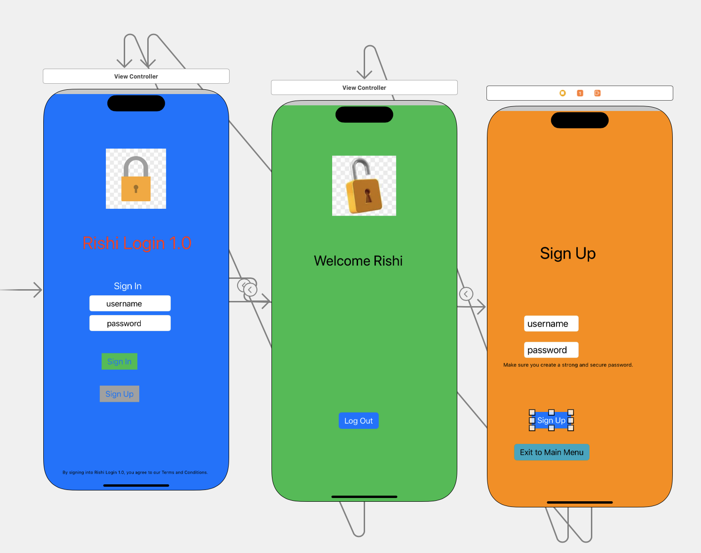

Unit 7 Concepts
Concepts Covered
Creating a Sign In Screen
This concept involves designing a user interface where users can enter their credentials to access the app. It includes input fields for usernames and passwords, along with visual feedback for any errors.
Creating Sign In/Sign Up Buttons
These buttons allow users to either log in to their existing account or create a new one. The design should be intuitive and easily accessible to guide users through the authentication process.
Adding a Welcome Screen
The welcome screen is displayed after a successful login. It provides a friendly introduction to the app and directs users to the next steps, enhancing user engagement from the start.
Adding a Sign Up Screen
The sign-up screen collects user information to create a new account. This includes fields for email, username, and password, often accompanied by validation checks to ensure data integrity.